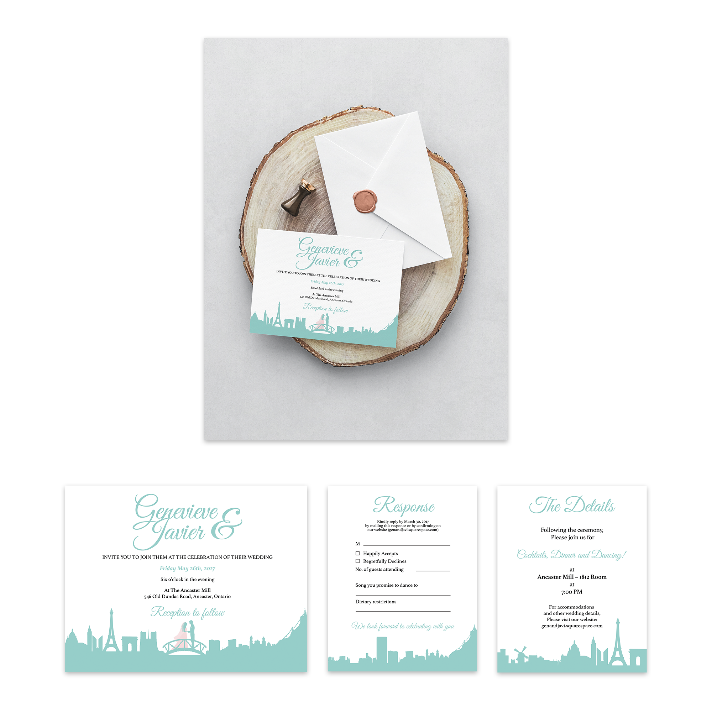

2017, print (InDesign, Illustrator)
This freelance project consisted of designing a wedding invitation, an information piece and the RSVP piece for guests to send back. It was important to take into the account a restricted budget for the 90 sets needed; as such, the invitations needed to be simple and easy to print. As canadian immigrants, the couple requested that their previous homes be represented in the invitation. With this in mind, I decided to show the capitals of their previous countries (Bogota, Colombia and Paris, France) through silhouettes of well-known structures of both cities that are connected by a bridge where the couple is standing, ready to wed. These silhouettes are composed of three different vector stock purchased and then edited by me.